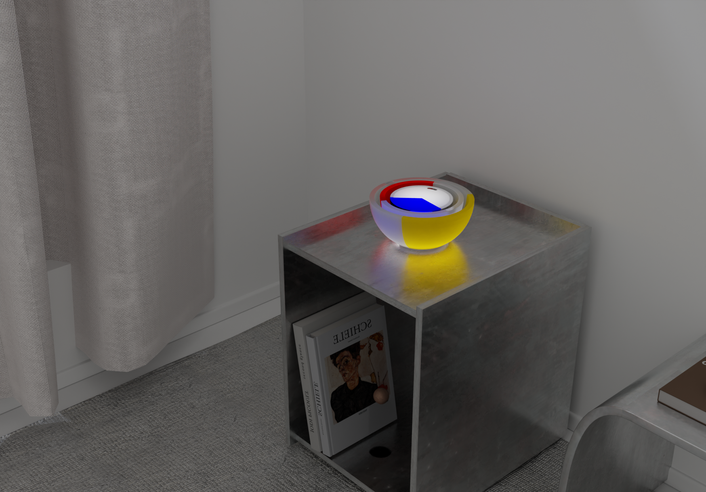
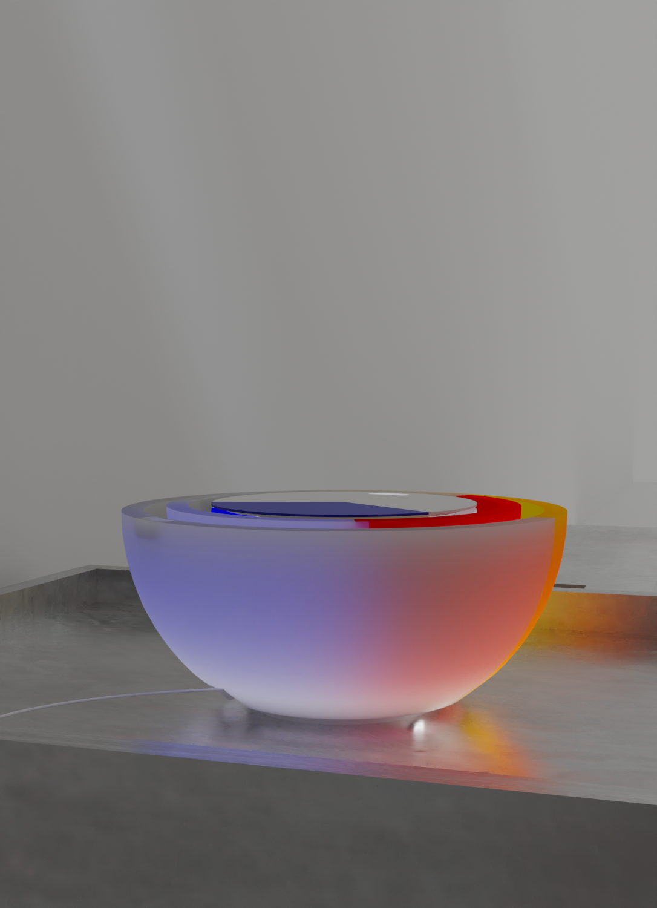

AN INTERACTIVE LIGHT STUDY / 2026
One light.
Endless compositions.
旋转三个同心环，重新组织色彩与光的氛围。
01 / DIGITAL COMPOSITIONMANUAL
THREE RINGS. YOUR COMPOSITION.2D INTERACTION STUDY
04 / PHYSICAL MOOD STUDY
From mood to movement.
选择上方 Mood，跳转到对应的实体模型动画。
18 SEC · ORIGINAL 3D MODEL · CALM → ENERGETIC → FOCUSED

FROM OBJECT TO INTERACTION
Physical → Digital
三层同心环可独立旋转。数字版本将实体旋转映射为角度控制，让色彩构成成为可以探索的交互。
- DIMENSIONS
- H 15 cm · Ø 30 cm
- MATERIAL
- Plexiglass / Acrylic
上方圆环是平面交互示意；模型视频与原始场景图用于展示实体造型。
